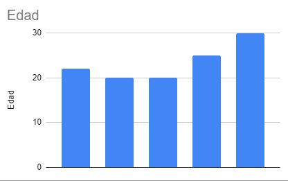
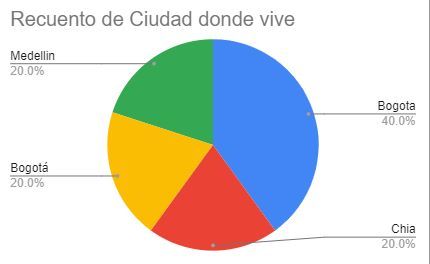
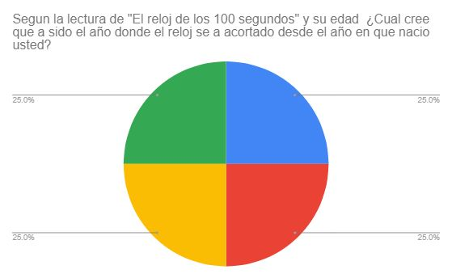

Se hizo una encuesta a 6 personas donde se les pregunto sobre la lectura de esta pagina
Nombre

Edad
Ciudad donde vive
Pregunta anexada a la imagen
Pregunta anexada a la imagen

Pregunta anexada a la imagen

Analizando las respuestas podemos concluir que las 6 personas que fueron encuestadas tienen menos de 30 años y mas de 18 años, por lo cual creen que el reloj a estado mas cerca del fin del mundo en el 2020 por la pandemia de Covid-19, vemos que todas las personas viven en Colombia por lo cual tambien podemos concluir que son personas que no estan al alcance de una crisis de misiles como lo fue en Estados Unidos cuando Cuba guardo misiles de corto alcance de Rusia.
Desde mi punto de vista concluyo que son personas que no han vivido experiencias que puedan argumentar como "Apocalipticas" solo por haber vivido la pandemia del 2020, esto lo argumento ya que para las personas que tienen entre 15 y 25 años en la pandemia no tuvieron responsabilidades, estas personas encuestadas son personas que tienen recursos economicos y gracias a esto afortunadamente no han vivido una experiencia cercana al fin del mundo.
Mi opinion desde el punto de vista de la ingenieria es que deberiamos concientizar a las personas para la creacion de avances tecnologicos que ayuden a mejorar la calidad de vida en el mundo, desafortunadamente Albert Einstein no sabia que su creacion seria usada para amordazar a la poblacion global, desafortunadamente los que sufrimos estas decisiones somos las personas comunes